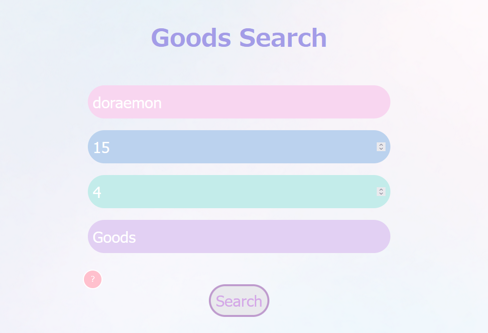
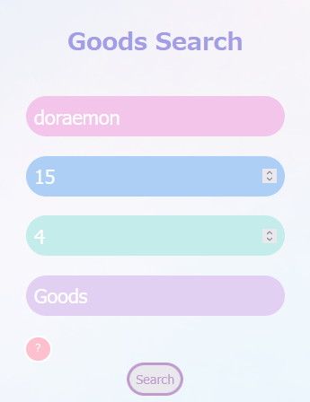

・How to use・
①Enter the name of the Oshi for whom you want to search for goods.
(You be able to put the location of your affiliation in front of your name.)
②Enter budget.
③Enter the number of goods.(If not specified, not entered.)
④Enter the type of goods you want.(If not specified, enter "goods".)

